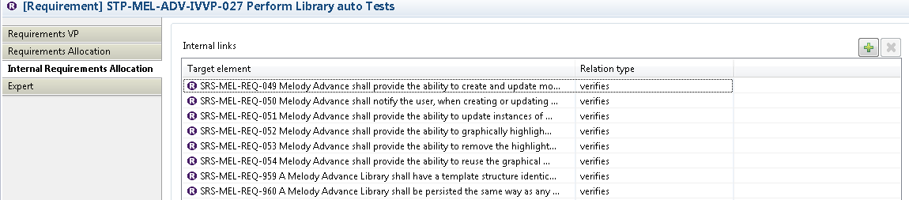
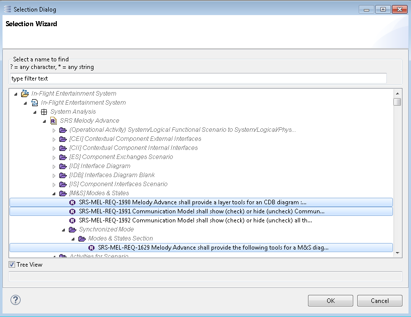
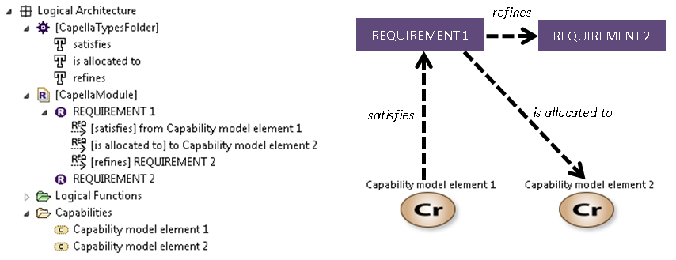

Requirement allocation views should allow to specify i) relations between requirements and Capella elements and ii) relations between requirements themselves. Respectively, there are two Property views dedicated for these purposes: The Requirements Allocation view and the Internal Requirements Allocation view.
The Requirements Allocation view shows all incoming and outgoing relations for an element. This element could be a Requirement, a Capella element or a Diagram. The addition of a relation can be done in three steps as demonstrated with the following example
Click on the Plus button to show target elements
Select multiple elements to which we want to create relations
Choose the Relation Type of each added relation
The Internal Requirements Allocation view shows all relations coming from one Requirement to another Requirement.
Multiple Requirements can be chosen to create new Relations
Technically, relations are stored under the source element of the relation. Also note that relations are technical elements and they are filtered by default. In order to see relations in Capella project explorer, the default filter must be deactivated. Following is an example of Requirements and their relations to/from Capella Elements:
